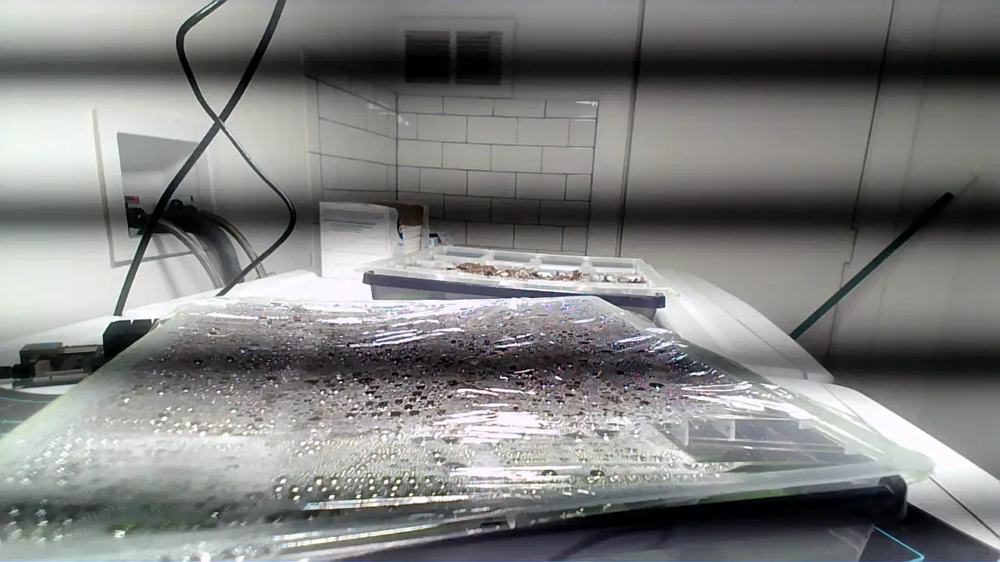
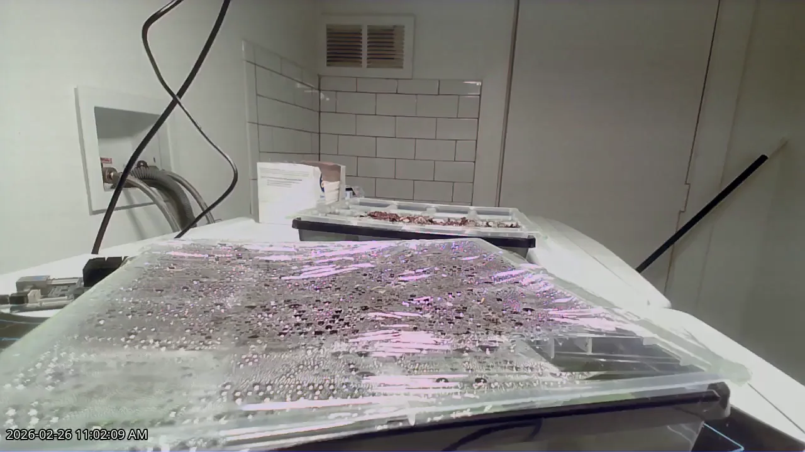

Before
AfterUse the arrow keys or drag to reveal the filtered frame.
Project 01
The grow lights broke the camera, so I taught FFmpeg a trick.
Cheap grow lights made a rolling-shutter webcam look striped. I built a two-stage FFmpeg filter that removes the 120 Hz banding without ghosting, using about 64% less CPU than my first attempt; the rest of the project handles live streams and timelapses.
Python · Flask · React · FFmpeg · HLS.js · Linux
See it live (opens in a new tab) Backend source (opens in a new tab) Frontend source (opens in a new tab)